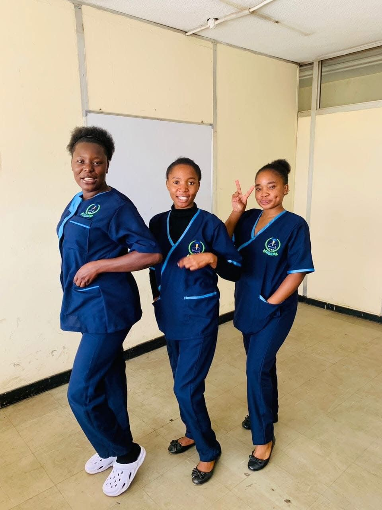

Join Nexar Institute for high-quality education and practical training in healthcare and business studies.
Apply NowNexar Institute of Health Sciences and Business Studies, founded in August 2023, NEXAR Institute of Health Sciences and Business Studies is a registered health sciences-based learning and training institute whose mission is to offer high quality education and skills necessary for our students to assure optimum health conditions in the community and beyond. We are dedicated to excellence and results. In addition to providing quality training and research, we actively partner with government, the private sector and the non-profit sector to connect classroom knowledge to real world experience.
Nexar Institute envisions a dynamic future where excellence in education and practical skills meet to redefine success in healthcare and business. We aspire to be the catalyst for transformative growth, producing ethical leaders, fostering innovation, and driving Zambia's prosperity and sustainability on a global stage
Offer high quality education and skills necessary for students to assure optimum health conditions in the community and beyond. Narrowing skill gaps in healthcare and business while democratizing access to quality learning to pioneer economic growth, human development and innovation.
Begin your academic journey by applying to Nexar Institute. Follow these steps:
Address: 9th Floor, Kulima Tower Building, Katunjila Road, Lusaka
Email: nexarschool@gmail.com
Phone: +260 767 814 141